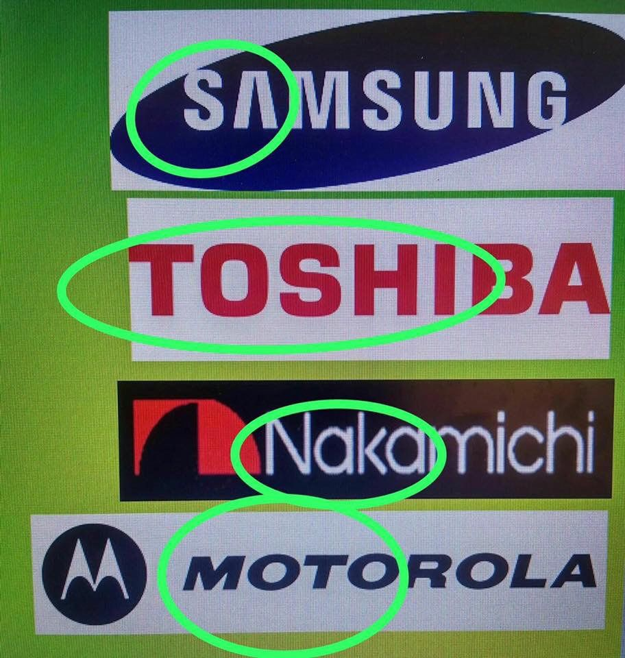
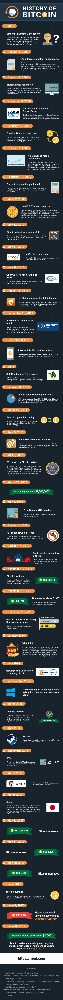

The CryptoBus: Satoshi's baby...Bitcoin.
What is Bitcoin? Let's just get the technical definition out of the way, shall we?
- Bitcoin is a digital currency system that also acts as a consensus network which enables a new payment system globally at anytime without a centralized government or bank to manipulate it. It allows anyone in the world to send or receive money across the internet. Money can be exchanged without being linked to a real identity. The mathematical field of cryptography is the basis for Bitcoin's security.(Bitcoin Wiki Page)
In a nutshell, Bitcoin uses peer-to-peer technology to operate with no central authority or central bank; management of transactions and the usage of bitcoins are carried out collectively by the network. It is open-sourced; it's design is public, nobody owns or controls it and everyone can take part!You can think of it as cash for the internet, but with arguably the most advanced and transparent triple-entry book-keeping system in existence.
Investing in Bitcoin:
Potential Return
Some fun facts to think about...
- The mysterious legend SATOSHI NAKAMOTO is the name of the Bitcoin creator(or creators:).
- NO SINGLE ENTITY OR GOVERNMENT has control over the Bitcoin currency.
- All Bitcoin transaction data is transparent.
- A new block of coins is mined every 10 minutes.
- As of August 2017, Bitcoin's Market Cap is estimated at $75.8 BILLION DOLLARS.
- From March 2015 to Feb 2017, Bitcoin transactions are up 1289%.
- The maximum number of Bitcoins that can exist: 21 MILLION.
- Over 300,000 stores in Japan accept Bitcoin as payment.
- 90% of all Bitcoin addresses have less than 0.1 BTC.
- By owning 1 million bitcoins, at today's rate, Satoshi Nakamoto is estimated to be worth $4.7 billion Dollars.
Where did it come from? Why the big fuss? Well, In order to get into bitcoin, we must address the founder, the women, or man, or group, or spirit-animal that goes by the name Satoshi, Nakamoto. First off, we still don't who or whom Satoshi Nakamoto is. There is no evidence that Satoshi was one person or a group of people. All we know is that Satoshi Nakamoto was the creator of the 2009 White Paper of Bitcoin and the Blockchain. Here's what the name translates to...
- Satoshi: "clear-thinking, quick witted;wise."
- Naka: can mean "medium", "inside", or "relationship".
- Moto: can mean "origin" or "foundation".
- A bitcoin community theory of where the name might have originated from.

One thing is for sure, the intent of Saytoshi was to give the political power of money back to US, YOU, THE PEOPLE, by a system that creates an open-source record (via the blockchain) of all transactions, ever made! Maybe you haven't heard of bitcoin or crypto currencies because it is impossible to talk about it without entering into a political discussion. Satoshi created bitcoin to combat the corruption of governments and world banks. Here's a quote from early archived emails...
The root problem with conventional currency is all the trust that’s required to make it work. The central bank must be trusted not to debase the currency, but the history of fiat currencies is full of breaches of that trust. Banks must be trusted to hold our money and transfer it electronically, but they lend it out in waves of credit bubbles with hardly a fraction in reserve. - Satoshi Nakamoto.
Here's a timeline to give you an idea of how Bitcoin has developed...source
